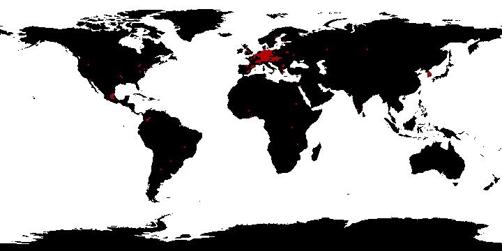

OpenStreetMap has grown enormously. It’s data is used quite often by researchers of various fields. File data/OpenStreetMap.bib contains bibliography where either OSM, OpenStreetMap or Volunteered Geographic Information appears in title and/or abstract. The articled published in first years concentrated mostly on data quality and volunteered phenomenon of spatial data collection. Few years later we can observe shift from assessment to use of the OSM data as base spatial set in the analyses. Figure 2.2 display the number of scientific papers by year, while Figure 2.3 shows most common words used in titles.
Figure 2.2: OpenStreetMap related bibliography by year
Figure 2.3: Most common words in OSM bibliography
Data quality was assessed in various scientific studies, beginning with the comparison of OSM roads network with official data sets. Haklay (2010) conducted a study for England, while Kounadi (2009) focused on Athens, Greece, examining positional accuracy, completeness and thematic accuracy. Subsequent studies such as Zielstra and Zipf (2010), Ludwig, Voss, and Krause-Traudes (2011) and Neis, Zielstra, and Zipf (2011) delved into the quality of the road network in Germany.
The quality of other features has also been assessed. For instance, Mooney, Corcoran, and Winstanley (2010) compared land cover data with Ordnance Survey Ireland, while Girres and Touya (2010) evaluated data quality principles in accordance with ISO 19113:20021 for France.
2.1 Data access and available formats
There are several ways to access the OpenStreetMap data. The entire planet data, currently approximately 73 GB in a binary (packed) PBF file, can be downloaded from planet.osm (“Planet OSM” 2024). Alternatively, smaller snapshots can be obtained from GeoFabrik.de or BBBike.org. Those sources provide data in OSM XML and/or PBF formats. Subsequently, tools like osm2pgsql can be used to import the data into Postgresql/PostGIS database, osmosis for data manipulation and filtering, or QGIS for direct processing.
For those seeking direct access to the data, the Overpass API is available with Overpass Turbo serving as a front-end where users can build and execute the queries instantly. Further details about data access are described on the wiki.
To access OSM spatial data from R, there are several libraries available. The {osmextract} (Gilardi and Lovelace 2023) library enables the download and import data extracts, for instance, from GeoFabrik. Additionally, the {osmdata} package (Mark Padgham et al. 2017) can be utilized, which leverages the Overpass API to import data as Simple Features {sf} or Spatial Objects {sp}.
2.1.1 osmextract
As the name suggest, the package allows you to search, download and process the data extracts available online. Per default it uses 3 providers:
osmextract::oe_providers()
Check the corresponding help pages to read more details about the fields in each database (e.g. ?geofabrik_zones).
Each of these providers has a specific set of areas, for example BBBike.org offers data sets for the biggest cities around the globe, while GeoFabrik.de and openstreetmap.fr cover the entire world. Figure 2.4 visualizes the areas covered by these providers. The typical workflow consists of few steps:
Find the area of interest by matching it with one of the files/areas stored by providers using oe_match();
Download the .pbf file with oe_download();
Convert the .pbf file to .gpkg file with oe_vectortranslate();
Read the data using oe_read() function.
Section 2.2.3.2 shows an example of {osmextract} usage for postal code areas around Leipzig, Germany.
(a) BBBike.org
(b) GeoFabrik.de
(c) openstreetmap.fr
Figure 2.4: Area covered by different providers.
2.1.2 osmdata
The {osmdata} package enables the construction of a query to retrieve data from Overpass server. The initial step involves creating a bounding box around the geographical area of interest. The getbb() function serves as a helper; it queries the Nominatim service for coordinates and downloads the bounding box for the specified location, as demonstrated in our example with the Czech Republic.
b <- osmdata::getbb("Czech Republic")
By default it returns a data in matrix form, like:
min max
x 12.09058 18.85925
y 48.55181 51.05569
The subsequent step involves generating an Overpass query using the opq() function, which searches for requested features within the specified bounding box. By utilizing add_osm_feature() function and specifying key-value pairs, we narrow down the search criteria. In our example, we focus on administrative boundaries at the 2nd level (corresponding to countries) and further narrow it to Czechia. The pipe |> functions as the AND operator in the query.
osm <- osmdata::opq(bbox = b, timeout =60*20) |> osmdata::add_osm_feature(key ="boundary", value ="administrative") |> osmdata::add_osm_feature(key ="admin_level", value ="2") |> osmdata::add_osm_feature(key ="name:en", value ="Czechia") |> osmdata::osmdata_sf()
The OSM data set is extensive as Overpass returns all points, (multi)lines and (multi)polygons that are ‘touched’ by the query. Upon examining the osm object returned, we observe the details: 125 k points, 1 k linestrings and 1 multipolygon which constitutes the country.
Object of class 'osmdata' with:
$bbox : 48.5518081,12.0905752,51.0556945,18.8592538
$overpass_call : The call submitted to the overpass API
$meta : metadata including timestamp and version numbers
$osm_points : 'sf' Simple Features Collection with 125030 points
$osm_lines : 'sf' Simple Features Collection with 1009 linestrings
$osm_polygons : 'sf' Simple Features Collection with 0 polygons
$osm_multilines : NULL
$osm_multipolygons : 'sf' Simple Features Collection with 1 multipolygons
Each variable contain particular set of features like points, (multi)lines or (multi)polygons. We can access them directly using osm$osm_... like:
Let’s proceed with our straightforward example of OSM-based spatial data: administrative boundaries. Typically, administrative areas are depicted as polygons, with their geometries highlighted by color or the shape of their borders. The examples of administrative borders are illustrated in the Figure 2.5.
Boder between Germany and Poland, on Polish auto map, 1937
There are several openly available datasets that offer administrative boundaries, such as world country polygons from the {spData} package (Bivand, Nowosad, and Lovelace 2023), Natural Earth2 accessible via {rnaturalearthdata} package (South 2017), {geodata} (Hijmans et al. 2023), etc. For those who like point-and-click, there is a osm-boundaries.com service, where you can pick the boundaries and download it in few different formats including GeoJSON. Figure 2.6 displays few sets of freely available boundary data for a section of the Czech Republic boundary. You may observe a significant difference between these lines and the administrative boundary from the OpenStreetMap map layer below. Despite both datasets being prepared based on OSM data, they have undergone simplification. Please exercise caution when selecting your data set and utilize it judiciously.
Figure 2.6: Different boundary lines shown on OSM background: World data set from {tmap} package (Tennekes 2018)in orange and Czech Republic administrative boundary data from GADM by {geodata} package in blue.
Let’s add the data extracted with {osmdata} to our previous plot:
Code
osm <- osm |> osmdata::unname_osmdata_sf()d <- osm$osm_multipolygons |>subset(select =c("name", "geometry")) tmpl + tmap::tm_shape(d) + tmap::tm_lines(col ="darkgreen", lwd =2)
Figure 2.7: And with Czech Republic boundary based on OpenStreetMap data (green).
Please note the distinction. It’s worth highlighting that the boundary obtained from the geodata::gadm() function is quite close to the original OSM line. Sometimes, simplicity translates to quicker outcomes. The choice of which data set to use depends entirely on the intended purpose and the desired level of accuracy.
It’s important to note that there are countries, such as Italy, whose borders incorporate territorial waters.
Code
it_bbox <- osmdata::getbb("Italy")it <- osmdata::opq(bbox = it_bbox, timeout =60*20) |> osmdata::add_osm_feature(key ="boundary", value ="administrative") |> osmdata::add_osm_feature(key ="admin_level", value ="2") |> osmdata::add_osm_feature(key ="name:en", value ="Italy") |> osmdata::osmdata_sf() |> osmdata::unname_osmdata_sf()it_border <- it$osm_multipolygons |>subset(name =="Italia")tmap::tm_shape(it_border) + tmap::tm_basemap("OpenStreetMap") + tmap::tm_borders(lwd =2, col ="orange")
Figure 2.8: Border of the Italy including territorial waters
If there is a requirement to preserve landmass only boundaries, a useful ‘trick’ is to download lower-level areas and then combine them. For example:
Such trick will work for some countries like Italy, France or Spain, however it will not for all of them because their lower level boundaries may also include territorial waters like in Poland or Germany. For other countries you can try to use other admin_level (i.e. 7 for Greece will work). To deal with such issue one can use water polygons3 and subtract it from boundaries.
2.2.2 Below country level
Sub-national borders like province, state, region, district, parish, municipality or any other country-specific administrative areas are marked with admin_level = 3 to 11. The details for almost all countries can be found on wiki, but there is a general pattern across OSM data:
Table 2.1: General administrative levels of OSM boundaries
admin_level
meaning
4
provinces, regions, prefectures
6
counties, regions
7
municipalities, towns
8-9
villages, parts of town
The geodata::gadm() function allows to get the administrative boundaries up to municipality level, like the below example for Poland:
But what, if we want to go deeper with our analysis and look on single villages or even hamlets within one municipality? Let’s try it on municipality of Prusice, Lower Silesia, Poland. After getting the bounding box we are requesting boundary = administrative objects, regardless of its level. We will use admin_level to filter out boundaries of municipality as a whole and the villages which constitute it.
Not bad, however there is a lot of villages which surround the municipality. Please remember, the Overpass returns all features which intersects with query bounding box, including whole polygons. To get rid of those villages we will use sf::st_filter() function with st_within predicate to filter out only those villages, which are within municipality boundaries.
OpenStreetMap data it’s not only spatial data base. It contain other information as well. For example, our boundaries of the villages are stored as a relation with ways as members. Additionally there might be admin_center pointing to node (point) which is marked as place = village or town with other tags, like:
q <- osmdata::opq("Kopaszyn") |> osmdata::add_osm_feature(key ="boundary", value ="administrative") |> osmdata::add_osm_feature(key ="admin_level", value ="8") |> osmdata::add_osm_feature(key ="name", value ="Kopaszyn")a <- q |> osmdata::osmdata_xml() a|> xml2::xml_find_all(xpath =".//node") |> xml2::xml_children()
We can see population, population:date and source:population among others. We can use them and run a simple analysis of population density in our municipality. But please be aware, the data might be a bit obsolete (as population:date indicates), and there might be better source of up-to date data, like national statistical office or Wikipedia/Wikidata.
Figure 2.10: Population and population density in Prusice municipality based on OSM data
A very similar approach can be used for other administrative levels, like municipal arrondissements (subdivisions of the commune) of Paris, France, where boundaries are on admin_level=9 (Figure 2.11).
In addition to administrative boundaries, OpenStreetMap has other types of boundaries. They can be shortlisted using the osmdata::available_tags("boundary") function. But to see the frequency of each tag, you can look at taginfo.
Table 2.2: 10 most popular boundary= values in OpenStreetMap
value
count
fraction
description
administrative
2011827
0.84
An administrative boundary recognised by governments for administrative purposes.
protected_area
113754
0.05
Used to mark boundaries of protected areas including national parks, wilderness, marine protection areas, heritage sites and other, similar areas.
postal_code
53164
0.02
A postal code boundary
census
24760
0.01
A census-designated boundary delineating a statistical area, not necessarily observable on the ground
marker
21722
0.01
A physical marker that identifies a boundary
landuse
16364
0.01
local_authority
15884
0.01
Describes the territory of a local authority
forest_compartment
14981
0.01
A marked subdivision of delimited forest, which is used for planning, management & navigation
political
13918
0.01
Political boundary, such as an electoral ward or parliamentary constituency
health
12756
0.01
Protected areas
The second most popular type of borders are the borders of protected areas: national parks, reserves and other areas of cultural importance. They are mapped as boundary = protected_area together with protect_class = 1 to 99; the first 6 values corresponds to categories introduced by International Union for Conservation of Nature (IUCN) like Strict Nature Reserve (IUCN Category Ia), Wilderness Area (IUCN Category Ib), National Park (IUCN Category II), etc. You can find the details on wiki. But please be aware there might be another tags combination used to map the boundaries of protected areas like boundary = national_park which corresponds to boundary = protected_area + protect_class = 2. In such case user has to extend the query, therefore in below example we will ask for all boundaries and filter it later using subset()4.
Using a bit of mathematics we can calculate the areas of those parks and arrange them accordingly. In the code below we convert the units from m2 to km2 using set_units() function from {units} package (Pebesma, Mailund, and Hiebert 2016).
Table 2.3: Some details about Parque Nacional Alto Purús from OpenStreetMap data
short_name
operator
related_law
start_date
wikipedia
wikidata
Alto Purús
SERNANP
D.S. N° 040-2004_AG.
2004-11-18
es:Parque nacional del Alto Purús
Q2812162
With wikipedia field we can create link to Wikipedia article but let’s have a look on wikidata – it host Wikidata entry for our national park. Using {wikidataR} package (Shafee, Keyes, and Signorelli 2021) we can explore the information stored there. In first step we have to get information behind the item coded as Q2812162. Then we extract the image property (P18) for this item. In next step we build an URL to Wikimedia Commons to grab image, it’s attributes and display it.
Have you realized how easy is to combine data from 2 sources: OpenStreetMap and Wikipedia?
Postal code areas
Postal code boundaries are the third most common boundaries in OSM, however please be aware, that such information doesn’t exist in each country. Figure 2.13 displays the distribution of this tag — mostly used in Belgium, Germany, Vietnam and in few other spots across the globe.

Figure 2.13: Postal code boundaries distribution, source: taginfo
As an example we will use {osmextract} to deal with data. Let say, we are interested in data set around Leipzig, Germany. First, we can check if any data provider offers such set.
osmextract::oe_match(place =c("Leipzig"))
No exact match found for place = Leipzig and provider = geofabrik. Best match is Belize.
Checking the other providers.
An exact string match was found using provider = bbbike.
We can download and preprocess it using oe_get() function. In this step the file is downloaded and all closed linestrings or relations are converted to layer with geometry type MULTIPOLYGON and stored in corresponding .gpkg file.
l <- osmextract::oe_get("Leipzig", layer ="multipolygons",download_directory ="data")
As the layer contains 574267 different features (including land usage, buildings, parks, forests etc.) and it takes 703 Mb, it not necessary make sense to load it in whole. As we are interested in postal area boundaries, let utilize query= parameter and hstore_get_value() function.5
l <- osmextract::oe_read("data/bbbike_Leipzig.gpkg", query ="SELECT osm_id, hstore_get_value(other_tags, 'postal_code') AS p_code, hstore_get_value(other_tags, 'postal_code_level') AS p_level, geometry FROM multipolygons WHERE boundary = 'postal_code'")
l <- l |> dplyr::mutate(post_prefix =substr(p_code, 1, 3))tmap::tm_shape(l) + tmap::tm_polygons(fill ="post_prefix",fill.scale = tmap::tm_scale_categorical(values ="Blues"),fill.legend = tmap::tm_legend(title ="Postal prefix"))
Figure 2.14: Postal prefixes in and around Lepizig
Tip
As stated previously, the post code areas are sparse and scattered. As an idea: we can collect the post code from addr:postcode tag assigned to places (osm_points or osm_(multi)polygons) and/or buildings/addresses then map it to lowest level of administrative boundary, however this may work for villages or small settlements. But assumption that postal areas corresponds somehow to administrative boundaries might be wrong. In bigger towns the post code may change from block to block. Other idea: having the addresses as POINT features one may try spatial kriging on them. Other method might be to use voronoi polygons.
Below an approach to add the postal codes to village boundaries using Wikidata as source.6
Code
adm_b <- osmextract::oe_read("data/bbbike_Leipzig.gpkg",query ="SELECT osm_id, boundary, admin_level, name, hstore_get_value(other_tags, 'postal_code') AS p_code, hstore_get_value(other_tags, 'wikidata') AS wikidata, geometry FROM multipolygons WHERE boundary = 'administrative'")adm_b <- adm_b |>subset(admin_level %in%c(8:10) &is.na(p_code))
The function which grabs the data is based on {WikidataR} package:
get_postal_code_from_wikidata <-function(q ="") {if (q !=""&!is.na(q)) { w <- WikidataR::get_item(q) x <- WikidataR::extract_claims(w, "P281")if (length(x[[1]]$P281.x) >1) { a <- x[[1]]$P281.x$mainsnak$datavalue$valueif (length(a >1)) { a <- a |>paste0(str =",", collapse =" ") } } else { a <-"" } } else { a <-"" }return(stringr::str_replace(a, ",$", ""))}adm_b <- adm_b |> dplyr::rowwise() |> dplyr::mutate(postal_code =get_postal_code_from_wikidata(wikidata))
Table 2.4: Example of administrative areas with postal code assigned
name
admin_level
postal_code
Markkleeberg
8
04416
Großpösna
8
04463
Seelitz
8
09306
Rochlitz
8
09306
Königsfeld
8
09306
Zettlitz
8
09306
Markranstädt
8
04420
Kitzen
10
04523
Pegau
8
04523
Elstertrebnitz
8
04523
Groitzsch
8
04539
Regis-Breitingen
8
04565
Figure 2.15: Administrative areas with postal codes from Wikidata, grouped by prefix
2.3 Land coverage and use
Land coverage (representation of physical surface on the Earth like grass, asphalt, trees, ground, water) and land use (how humans modified and managed the natural environment into arable fields, pastures or settlements) is another area where you can use OpenStreetMap data. In mid of 2010’s Jacinto Estima and Marco Painho investigated the coverage of OSM data in Portugal (Estima and Painho 2013, 2015), followed later by others (Schultz et al. 2017; Schott et al. 2022). Based on those works there is even an osmlanduse.org service build and hosted by Heidelberg Institute for Geoinformation Technology. Recently the topic was discussed by Fonte et al. (2019) where they compared OSM data with two European LULC products: the Urban Atlas and CORINE Land Cover.
The main keys which describes those features are natural and landuse. Table 2.5 shows the mapping between Corine Land Cover database and OSM data. Corine data was used in the past to map the surface of Europe, nowadays the data is replaced by other sources, mainly ortophoto maps, however the table gives a good overview of tag-value combinations for area mapping.
Table 2.5: Corine Land Cover classess and corresponding OpenStreetMap taging system. Source: wiki.
Code
Description
Comment
1
Artificial surfaces
Artificial surfaces
1.1
Urban fabric
Urban fabric
1.1.1
Continuous urban fabric
`landuse=residential`, `landuse=commercial`, `landuse=retail` and `landuse=industrial`
1.1.2
Discontinuous urban fabric
`landuse=residential`, `landuse=commercial`, `landuse=retail` and `landuse=industrial`
1.2
Industrial, commercial and transport units
Industrial, commercial and transport units
1.2.1
Industrial or commercial units
`landuse=industrial`, `landuse=commercial`, or `landuse=retail`
1.2.2
Road and rail networks and associated land
`landuse=railway` for railway areas only. This class is a mix of road and rail landuse; `landuse=highway` is not commonly used.
1.2.3
Port areas
`landuse=industrial` + `industrial=port` or `leisure=marina`
1.2.4
Airports
`aeroway=aerodrome`
1.3
Mine, dump and construction sites
Mine, dump and construction sites
1.3.1
Mineral extraction sites
`landuse=quarry`
1.3.2
Dump sites
`landuse=landfill`
1.3.3
Construction sites
`landuse=construction`
1.4
Artificial, non-agricultural vegetated areas
Artificial, non-agricultural vegetated areas
1.4.1
Green urban areas
Several tags are possible: `leisure=park`, `leisure=garden`, `leisure=pitch`, `leisure=golf`_course,`landuse=grass`, `natural=wood`, and other tags
1.4.2
Sport and leisure facilities
See leisure=* for the many possibilities.
2
Agricultural areas
Agricultural areas
2.1
Arable land
Arable land
2.1.1
Non-irrigated arable land
`landuse=farmland`
2.1.2
Permanently irrigated land
`landuse=farmland`
2.1.3
Rice fields
`landuse=farmland` + `crop=rice`
2.2
Permanent crops
Permanent crops
2.2.1
Vineyards
`landuse=vineyard`
2.2.2
Fruit trees and berry plantations
`landuse=orchard`
2.2.3
Olive groves
`landuse=orchard` + `trees=olive`_trees
2.3
Pastures
Pastures
2.3.1
Pastures
`landuse=meadow`
2.4
Heterogeneous agricultural areas
Heterogeneous agricultural areas
2.4.1
Annual crops associated with permanent crops
Usually but not always `landuse=farmland`
2.4.2
Complex cultivation patterns
No single tag, consider `landuse=farmland`, `landuse=meadow`, `landuse=orchard` and `landuse=farmyard` for specific areas.
2.4.3
Land principally occupied by agriculture, with significant areas of natural vegetation
No single tag, consider `landuse=farmland`, `landuse=meadow`, `landuse=orchard` and `landuse=farmyard` for specific agricultural areas, plus `natural=wood`, `natural=scrub`, etc. for natural areas.
2.4.4
Agro-forestry areas
`landuse=forest`, `landuse=meadow`, `landuse=farmland` or a combination - requires survey.
3
Forest and seminatural areas
Forest and seminatural areas
3.1
Forests
Forests
3.1.1
Broad-leaved forest
`landuse=forest` or `natural=wood` + leaf_`type=broadleaved`
3.1.2
Coniferous forest
`landuse=forest` or `natural=wood` + leaf_`type=needleleaved`
3.1.3
Mixed forest
`landuse=forest` or `natural=wood` + leaf_`type=mixed`
3.2
Scrub and/or herbaceous vegetation associations
Scrub and/or herbaceous vegetation associations
3.2.1
Natural grasslands
`natural=grassland`
3.2.2
Moors and heathland
`natural=heath`
3.2.3
Sclerophyllous vegetation
`natural=scrub`
3.2.4
Transitional woodland-shrub
`natural=wood` or `natural=scrub` + leaf_`type=mixed`
3.3
Open spaces with little or no vegetation
Open spaces with little or no vegetation
3.3.1
Beaches, dunes, sands
`natural=beach` or `natural=sand`
3.3.2
Bare rocks
`natural=rock`, `natural=scree` or `natural=shingle`
3.3.3
Sparsely vegetated areas
Depending on main features, see `natural=scrub`, `natural=heath`, `natural=grassland`, `natural=bare`_rock, `natural=sand`, `natural=scree`, etc.
3.3.4
Burnt areas
N/A - not permanent.
3.3.5
Glaciers and perpetual snow
`natural=glacier`
4
Wetlands
Wetlands
4.1
Inland wetlands
Inland wetlands
4.1.1
Inland marshes
`natural=wetland` + `wetland=marsh`
4.1.2
Peat bogs
`natural=wetland` + `wetland=bog`
4.2
Maritime wetlands
Maritime wetlands
4.2.1
Salt marshes
`natural=wetland` + `wetland=saltmarsh`
4.2.2
Salines
`landuse=salt`_pond (See Proposed features/Salt Pond )
4.2.3
Intertidal flats
`wetland=tidalflat` or `tidal=yes` (See Proposed_features/Water_cover)
5
Water bodies
Water bodies
5.1
Inland waters
Inland waters
5.1.1
Water courses
`waterway=riverbank`
5.1.2
Water bodies
`natural=water` + `water=lake`
5.2
Marine waters
Marine waters
5.2.1
Coastal lagoons
`natural=water` + `water=lagoon` - also see `natural=coastline`
5.2.2
Estuaries
No compatible tag found
5.2.3
Sea and ocean
See `natural=coastline`
Let’s use already downloaded data set for Leipzig and see, what is there for land use.
sf::st_read("data/bbbike_Leipzig.gpkg", query ="SELECT DISTINCT natural FROM multipolygons WHERE natural != '' ORDER BY natural") |>as.list()
Reading query `SELECT DISTINCT natural
FROM multipolygons WHERE natural != '' ORDER BY natural'
from data source `/home/sapi/projekty/open_data/data/bbbike_Leipzig.gpkg' using driver `GPKG'
sf::st_read("data/bbbike_Leipzig.gpkg", query ="SELECT DISTINCT landuse FROM multipolygons WHERE landuse != '' ORDER BY landuse") |>as.list()
Reading query `SELECT DISTINCT landuse
FROM multipolygons WHERE landuse != '' ORDER BY landuse'
from data source `/home/sapi/projekty/open_data/data/bbbike_Leipzig.gpkg' using driver `GPKG'
You may observe that a forest can be described as either natural = wood or landuse = forest so, it’s necessary to combine those pairs. Similarly, various classes of of industrial areas, such as industrial, commercial, construction etc., can be aggregated. It’s important to note that there might be instances boundary = forest_compartment (refer to Table 2.2), which should be examined and potentially included as well. The code chunk below is just one example of numerous possible ways to extract the information. Please note query = parameter, which queries the database in OGR dialect.
sf::sf_use_s2(FALSE)lu <- sf::st_read("data/bbbike_Leipzig.gpkg",query ="SELECT osm_id, name, landuse, natural, 'forest' AS type, geometry \ FROM multipolygons \ WHERE landuse = 'forest' OR natural = 'wood' \ UNION \ SELECT osm_id, name, landuse, natural, 'residential' AS type, geometry \ FROM multipolygons \ WHERE landuse IN ('residential', 'education', 'religious') \ UNION \ SELECT osm_id, name, landuse, natural, 'commercial' AS type, geometry \ FROM multipolygons \ WHERE landuse IN ('industrial', 'commercial', 'construction')") |> sf::st_make_valid() |> sf::st_transform(crs ="EPSG:25832") |> dplyr::group_by(type) |> dplyr::summarise()
Figure 2.16: Example of land use around Leipzig, Germany
A freely accessible global land cover product at 10 m resolution, based on Sentinel-1 and Sentinel-2 data, containing 11 land cover classes, is available online at https://esa-worldcover.org. More information in Section 3.1.1.
2.4 Where the streets have no names
Streets, roads or paths — all have highway key within OSM. The main road types, their values and meaning is shown in Table 2.6. Except those highways, there is a bunch of others like living_streetpedestrian or just a track in forest — details are available on wiki. The OSM roads network data is probably most used data around the world. It’s a base for different navigation systems (including OSMAnd), for visualization of bus routes, it is also used in online games.
Table 2.6: Roads and their coding values in OpenStreetMap data. Source: wiki
Key
Value
Comment
highway
motorway
A restricted access major divided highway, normally with 2 or more running lanes plus emergency hard shoulder. Equivalent to the Freeway, Autobahn, etc..
highway
trunk
The most important roads in a country's system that aren't motorways. (Need not necessarily be a divided highway.)
highway
primary
The next most important roads in a country's system. (Often link larger towns.)
highway
secondary
The next most important roads in a country's system. (Often link towns.)
highway
tertiary
The next most important roads in a country's system. (Often link smaller towns and villages)
highway
unclassified
The least important through roads in a country's system – i.e. minor roads of a lower classification than tertiary, but which serve a purpose other than access to properties. (Often link villages and hamlets.) The word 'unclassified' is a historical artefact of the UK road system and does not mean that the classification is unknown; you can use highway=road for that.
highway
residential
Roads which serve as an access to housing, without function of connecting settlements. Often lined with housing.
Let’s extend Prusice municipality data with highways and see, what’s available.
Figure 2.17: Different roads classes in Prusice municipality based on OSM data
For those who prefer to use QGIS for styling and maps production, there is couple of resources to start with, including Anita’s Graser blog posts (underdark 2011a, 2011b, 2014). Look around and you will find nice examples.
You can use other tags associated with highways to check if it goes over bridge (bridge = yes or viaduct) or in tunnel (tunell = yes), what’s the max allowed speeds (various tags starting with maxspeed), what’s the road number (ref tag) or name, what’s the surface or smoothness, etc.
2.4.1 Bike infrastructure
In OpenStreetMap database the roads designated for bicycle can be described in different ways. The lanes can be separate, can be part of highway, or shared with pedestrians (and in some countries even with other vehicles). Let’s have a quick overview of the used tags.
Warning
This is non exhaustive list of all possible tags which can be used. For more information see wiki description of cycleway and bicycle infrastructure.
Separated ways for cycling usually are described as highway = cycleway, and in the field they are marked with white bicycle on blue background sign.7
highway = cycleway
If the cycling lane is shared with pedestrians, the usual tagging is:
Another possibility is to share the lane with cars on any highway (primary, tertiary, residential, etc). It can be the lane in the same or opposite direction. Tagging
highway = *
cycleway = lane
is used to tag two-way streets where there are cycle lanes on both sides of the road, or one-way streets where the lane operating in the same direction as main traffic flow. cycleway = opposite_lane is used for contraflow; cycleway = opposite + oneway:bicycle = no where cyclist are permitted to travel in both direction on one-way street. For shared lanes with motor vehicles: cycleway = shared_lane and cycleway=share_busway with buses. For more specific tagging please check wiki page.
In some countries additional tagging is in use. highway = * + bicycle_road = yes for signed roads and cyclestreet = yes for roads where other vehicles are allowed.8
Other features
Bicycle shops are tagged with shop = bicycle, and those which provide additional repair services have service:bicycle:repair = yes tags. There might be a do-it-yourself service stations, equipped with pump, wrenches and other helpful tools — in such case they are tagged with amenity = bicycle_repair_station.
Bicycle parkings are tagged with amenity = bicycle_parking. In towns where you can rent a bike, you will find amenity = bicycle_rental tags.
Bicycle routes
Cycle routes or bicycle route are named or numbered or otherwise signed routes. May go along roads, trails or dedicated cycle paths.9
They are tagged as a relations (several features grouped together with relation roles assigned)10; they can be of different network levels: network = icn | ncn | rcn | lcn which corresponds to international route, a national, a regional or a local route. Below an example of tagging of part of EuroVelo 9 route:
type = route
route = bicycle
network = icn
ref = EV9
colour = green
icn_ref = 9
As we already know and understand the attributes of the data, let’s play with it a bit. In next steps we will assess quantitatively the bicycle infrastructure in Leipzig, based on the data we already downloaded in Section 2.2.3.2.
First step would be to extract points, lines and polygons related bo bike infrastructure and convert it to .gpkg file using osmextract::oe_vectortranslate() function.
Driver: GPKG
Available layers:
layer_name geometry_type features fields
1 multipolygons Multi Polygon 574267 26
2 multilinestrings Multi Line String 1427 5
3 points Point 264815 12
4 lines Line String 288025 23
5 highways 109257 14
crs_name
1 WGS 84
2 WGS 84
3 WGS 84
4 WGS 84
5 DHDN / 3-degree Gauss-Kruger zone 4
As the data provided by BBBike.org covers the whole bounding box surrounding Leipzig, we have to find a city boundary and cut off the data outside. We will read all lines, select particular columns, cut by boundary and store in the .gpkg file.
leipzig_border <- sf::st_read("data/bbbike_Leipzig.gpkg",query ="SELECT name, geometry FROM multipolygons \ WHERE boundary = 'administrative' AND \ admin_level = 6 AND \ name = 'Leipzig'") |> sf::st_transform(crs ="EPSG:31468")hw <- sf::st_read("data/bbbike_Leipzig.gpkg", layer ="lines") |> dplyr::select("osm_id", "name", "highway", "foot",starts_with(c("bicycle", "cycleway")), "oneway", "surface", "vehicle") |> sf::st_transform(crs ="EPSG:31468") |> sf::st_intersection(leipzig_border)sf::st_write(hw, dsn ="data/bbbike_Leipzig.gpkg", layer ="highways", append =FALSE)
With the highways prepared, we can run simple analysis: count the length of the roads for bikes, bikes + pedestrians, and cars only.
Figure 2.18 visualizes road networks and it’s density.
(a) for bikes
(b) for cars
Figure 2.18: Highways in Leipzig
2.4.2 Routing and accessibility
But roads are not just lines on a map. It is also a network of connections that allow you to move from city to city, from one point to another. A network of connections that can be represented using graphs. It can be used both for routing and for analyzing the accessibility of various goods and resources: school, work or library.
There’s a lot of routing software on the market, both free and commercial, online and offline, which uses OSM and proprietary maps. The overview of those using OSM data can be found under https://wiki.openstreetmap.org/wiki/Routing/online_routers. Some of them provides API, which may be used in various tools (R, QGIS), some of them like BRouter integrates with different Android based map software (OSMAnd for example). There is a PostGIS/PostgreSQL pgRouting library which extends geospatial database capabilities by routing functionality with various algorithms.
Figure 2.19: Example of routes generated by openroutingservice.org using QGIS ORS plugin for cars and bikes.
ORS provides isochrones as well. Isochrones reflect the area/extent that can be reached within a given period of time. They are typically used to visualize reachability analysis, which is one of the fundamental tasks in urban planning. It can be used to measure the service area covered by schools, hospitals (Reinmuth and Zipf, n.d.), fire brigades, restaurants (Benhlima et al. 2023) or train stations (Fazio et al. 2023). It is used to run multimodal transport analysis and to optimize public transport facilities (Bauer et al. 2008; Marciuska and Gamper 2010; Kondrateva, Sidorov, and Saprykin 2017). Figure 2.20 displays example of areas which can be reach-out by 3, 6, and 9 minutes from fire stations in Prusice municipality. The isochrones were provided by openroutingservice API using {openrouteservice} package (Oleś 2024).
Figure 2.20: Areas reachable in 3, 6, and 9 minutes from fire stations in Prusice municipality.
2.5 Power grid
OSM is not just roads. There are several other features mapped, one of them is power grid. You can see the grid features mapped on Open Infrastructure Map.
Table 2.9: 10 most popular power= values in OpenStreetMap
value
count
fraction
description
tower
16089907
0.46
A tower or pylon carrying high voltage electricity cables. Often constructed from steel latticework but tubular or solid pylons are also used.
pole
13189726
0.37
A single pole supporting power lines, often a wood, steel, or concrete mast designed to carry minor power lines.
generator
2508120
0.07
A device which converts one form of energy to another, for example, an electrical generator.
line
922709
0.03
High-voltage power lines used for power transmission, usually supported by towers or pylons
minor_line
883016
0.03
Minor power lines forming the distribution grid, usually carried by poles.
substation
661210
0.02
A facility which controls the flow of electricity in a power network with transformers, switchgear or compensators.
portal
195721
0.01
A supporting structure for power lines, composed of vertical legs with cables between them attached to a horizontal crossarm.
transformer
180990
0.01
A device for stepping up or down electric voltage. Large power transformers are typically located inside substations
catenary_mast
176976
0.00
A pole supporting the overhead wires used to supply electricity to vehicles equipped with a pantograph such as trams and trains
switch
111941
0.00
A device which allows electrical network operators to power up & down lines and transformers in substations or along the power grid.
This section is inspired by OpenData StackExchange question. The queries are build around power tag. A very similar approach can be applied for oil and gas pipelines or other utilities. For details of usage see oil and gas infrastructure or pipeline tag.
Other sources of open data for power transmission lines are listed on openmod.
Bauer, Veronika, Johann Gamper, Roberto Loperfido, Sylvia Profanter, Stefan Putzer, and Igor Timko. 2008. “Computing Isochrones in Multi-Modal, Schedule-Based Transport Networks.” In Proceedings of the 16th ACM SIGSPATIAL International Conference on Advances in Geographic Information Systems, 1–2. GIS ’08. New York, NY, USA: Association for Computing Machinery. https://doi.org/b9xqfg.
Benhlima, Ouidad, Fouad Riane, Jakob Puchinger, and Hicham Bahi. 2023. “An Isochronic Measurement for the Analysis of Proximity to Restaurants and Locations of Food Delivery Parking.” In The 9th International Conference on Modeling, Simulation and Applied Optimization (ICMSAO’23). Marrakech (Maroc), Morocco. https://hal.science/hal-04086908.
Estima, Jacinto, and Marco Painho. 2013. “Exploratory Analysis of OpenStreetMap for Land Use Classification.” In Proceedings of the Second ACM SIGSPATIAL International Workshop on Crowdsourced and Volunteered Geographic Information, 39–46. https://doi.org/10.1145/2534732.2534734.
———. 2015. “Investigating the Potential of Openstreetmap for Land Use/Land Cover Production: A Case Study for Continental Portugal.” In OpenStreetMap in GIScience: Experiences, Research, and Applications, edited by Jamal Jokar Arsanjani, Alexander Zipf, Peter Mooney, and Marco Helbich, 273–93. Cham: Springer International Publishing. https://doi.org/10.1007/978-3-319-14280-7_14.
Fazio, Martina, Fabio Borghetti, Nadia Giuffrida, Michela Le Pira, Michela Longo, Matteo Ignaccolo, Giuseppe Inturri, and Roberto Maja. 2023. “The ‘15-Minutes Station’: A Case Study to Evaluate the Pedestrian Accessibility of Railway Transport in Southern Italy.”Transportation Research Procedia, AIIT 3rd International Conference on Transport Infrastructure and Systems (TIS ROMA 2022), 15th-16th September 2022, Rome, Italy, 69 (January): 536–43. https://doi.org/gtg74p.
Fonte, Cid’alia Costa, Joaquim Ant’onio Patriarca, Marco Minghini, Vyron Antoniou, Linda See, and Maria Antonia Brovelli. 2019. “Using OpenStreetMap to Create Land Use and Land Cover Maps: Development of an Application.” In Geospatial Intelligence: Concepts, Methodologies, Tools, and Applications (3 Volumes), edited by Information Resources Management Association, 1100–1123. Hershey PA, USA: IGI Global. https://www.igi-global.com/book/geospatial-intelligence-concepts-methodologies-tools/213224.
Girres, Jean?François, and Guillaume Touya. 2010. “Quality Assessment of the French OpenStreetMap Dataset.”Transactions in GIS 14 (4): 435–59. https://doi.org/10.1111/j.1467-9671.2010.01203.x.
Haklay, Mordechai. 2010. “How Good Is Volunteered Geographical Information? A Comparative Study of OpenStreetMap and Ordnance Survey Datasets.”Environment and Planning B: Planning and Design 37 (4): 682–703. https://doi.org/10.1068/b35097.
Kondrateva, Elena, Alexander Sidorov, and Oleg Saprykin. 2017. “An Isochrones Based Public Transport Stops Optimization Technique.” In 2017 5th IEEE International Conference on Models and Technologies for Intelligent Transportation Systems (MT-ITS), 182–87. https://doi.org/gtg72p.
Kounadi, Ourania. 2009. “Assessing the Quality of OpenStreetMap Data.”London: University College of London, Department of Civil, Environmental And Geomatic Engineering.
Ludwig, Ina, Angi Voss, and Maike Krause-Traudes. 2011. “A Comparison of the Street Networks of Navteq and OSM in Germany.” In Advancing Geoinformation Science for a Changing World, 65–84. https://doi.org/10.1007/978-3-642-19789-5_4.
Marciuska, Sarunas, and Johann Gamper. 2010. “Determining Objects Within Isochrones in Spatial Network Databases.” In Proceedings of the 14th East European Conference on Advances in Databases and Information Systems, 392–405. ADBIS’10. Berlin, Heidelberg: Springer-Verlag.
Mark Padgham, Bob Rudis, Robin Lovelace, and Maëlle Salmon. 2017. “Osmdata.”Journal of Open Source Software 2 (14): 305. https://doi.org/10.21105/joss.00305.
Mooney, Peter, Padraig Corcoran, and Adam Winstanley. 2010. “A Study of Data Representation of Natural Features in OpenStreetMap.” In. Zurich. https://giscience2010.org/.
Neis, Pascal, Dennis Zielstra, and Alexander Zipf. 2011. “The Street Network Evolution of Crowdsourced Maps: OpenStreetMap in Germany 2007–2011.”Future Internet 4 (1): 1–21. https://doi.org/10.3390/fi4010001.
Reinmuth, Marcel, and Alexander Zipf. n.d. “Physical Accessibility of Hospitals in Sub-Saharan Africa: An Exemplary Analysis of the Potential of Open Geodata in the Health Sector.”
Schott, M., S. Lautenbach, L. Größchen, and A. Zipf. 2022. “Openstreetmap Element Vectorisation - a Tool for High Resolution Data Insights and Its Usability in the Land-Use and Land-Cover Domain.”The International Archives of the Photogrammetry, Remote Sensing and Spatial Information Sciences XLVIII-4-W1-2022 (August): 395–402. https://doi.org/gtdww7.
Schultz, Michael, Janek Voss, Michael Auer, Sarah Carter, and Alexander Zipf. 2017. “Open Land Cover from OpenStreetMap and Remote Sensing.”International Journal of Applied Earth Observation and Geoinformation 63 (December): 206–13. https://doi.org/gddfn6.
Other option would be load all fields including other_tags (which are like hstore type field in Postgresql) and then massage it a bit with tidyverse functions:
l <- osmextract::oe_read("data/bbbike_Leipzig.gpkg",
query = "SELECT * FROM multipolygons WHERE boundary = 'postal_code'")
l |>
subset(select = other_tags) |>
tidyr::separate_rows(other_tags, sep = ",") |>
tidyr::separate(other_tags, into = c("key", "value"), sep = "=>") |>
dplyr::mutate_at(c("key", "value"), stringr::str_remove_all, '"') |>
tidyr::pivot_wider(names_from = "key", values_from = "value")